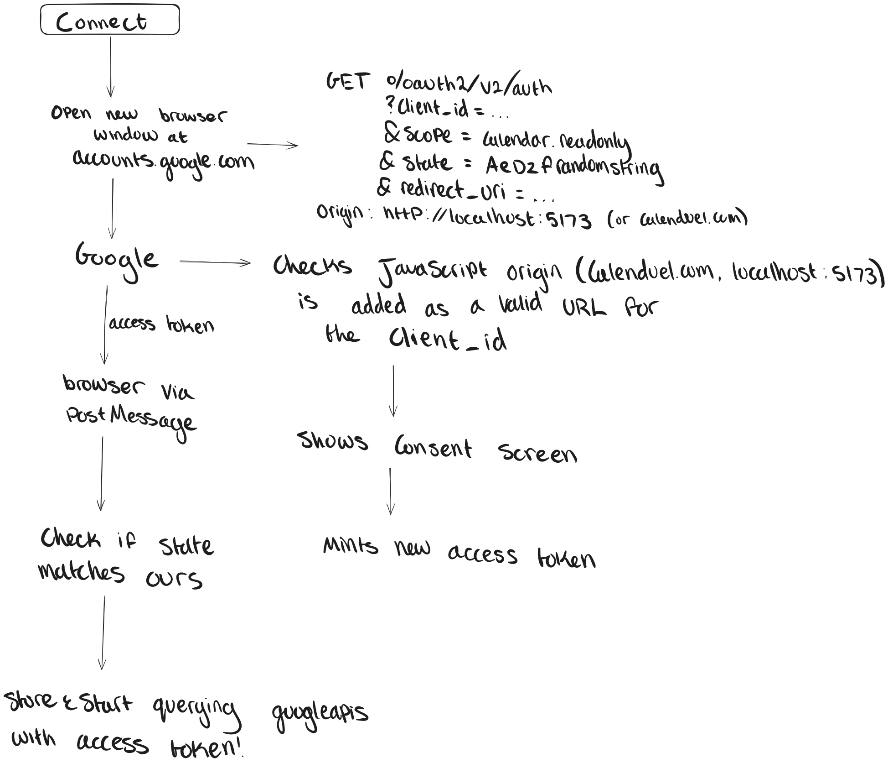
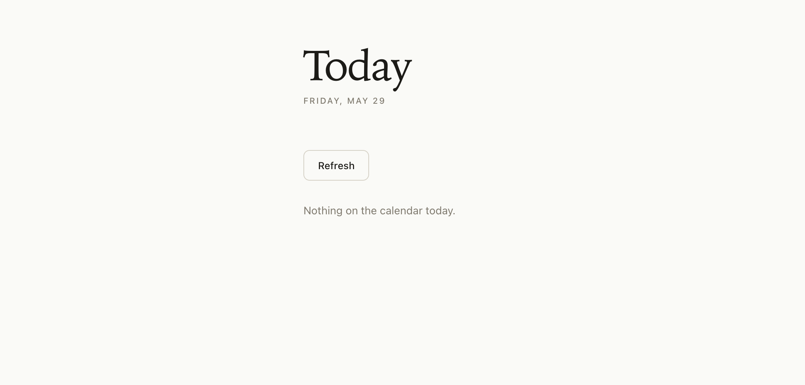

Day 4: Google Calendar integration
May 31, 2026
What I worked on
- Set up OAuth flow
- Displayed users calendar tasks for the day
- Started networking course
What I learned
Networking course
Day 2 made me realize how much I had to learn before becoming comfortable with developing this application, so I decided to take a networking course alongside the development of this project.
I’m going to be taking “The Bits and Bytes of Computer Networking” from Google via Coursera. My hope is that I’ll be able to build a mental model for how some of the networking in my project works, and then use the mental model enough to keep a lot of knowledge from the course after I finish it.
Conceptual understanding of OAuth Flow
My understanding of the OAuth flow looks like this:
- You send the user to Google’s authentication page and have them agree to our scope(s)
- Google sends them back to our website with an
access_token - The browser parses the
access_tokenout of the URL they requested, stores the token and the expiration date, and then calls the Calendar API whenever you want user data.
There’s one issue with this approach though:
How do you know if the request back to your website is being sent from Google?
Theoretically, the request could come from an attacker, and then you would be binding the user’s Calenduel account to the attacker’s Google Calendar.
This could lead to the user adding events with sensitive information to the attacker’s calendar.
To avoid this, there’s another step called the state parameter.
Before redirecting the user to Google’s auth URL, you create a random number, store it in the browser, and add it as a query parameter to the request.
When Google redirects the user to your website after the auth flow, it copies that value back in the request. You verify it matches the value stored in the browser, and then you know the access_token belongs to the user.
The attacker can’t guess the random number you generated, so if they send a request to your browser with a state parameter that doesn’t match yours, you know it’s illegitimate.

The Google Identity Services (GIS) SDK handles the redirect, token handoff, and state for us
Implementation of OAuth flow
Loading GIS SDK
Since we’re using the GIS SDK, the first step is to load it:
<script src="https://accounts.google.com/gsi/client" async defer></script>
‘gsi’ in the path refers to ‘Google Sign-In’.
This script creates a google member variable under the window object. The window object holds all information about the user’s tab, and the google object contains all functionality of the GIS SDK.
Setting up .env files
We need the Client ID so Google knows who’s sending the request, so let’s set that in .env.local:
VITE_GOOGLE_CLIENT_ID=your-client-id-here.apps.googleusercontent.com
the
VITEprefix tells Vite to make the variable visible to the browser
Adding the token client
To get access tokens for each user, we need to set up a token client, which sends the user to the accounts.google.com/o/oauth2/v2/auth endpoint with all the necessary information:
const client = window.google.accounts.oauth2.initTokenClient({
client_id: CLIENT_ID,
scope: 'https://www.googleapis.com/auth/calendar.readonly',
callback: (response) => {},
error_callback: (error) => {},
})
In the scope, we include whatever we want to be able to access from the user. In this case, we only care about reading their events.
Getting the access token
After adding the token client, we can call client.requestAccessToken():
- GIS opens a popup to accounts.google.com/o/oauth2/v2/auth, carrying your client_id and scope.
- The user picks an account, sees the consent screen (“Calenduel wants to view your calendar”), and clicks Allow.
- Google issues an access token and hands it back to GIS via the popup.
- Your callback runs, with the token in response.access_token
Lastly, we store the token so we don’t have to re-authenticate every time.
We opt to store the token in sessionStorage, some place in the browser where data persists on refresh, but clears when the tab is closed. We also store the time when the token expires. getStoredToken() checks if Date.now() <= expiresAt. If it is, it returns the stored token, otherwise we request the token again.
Fetching calendar events
To actually get events, we need to query the endpoint googleapis.com/calendar/v3/calendars/primary/events with the access token, time window, and specific calendar of the user.
‘primary’ represents the user’s main calendar
We add the time window as a query parameter to our URL, add the access token as an Authorization header, send the request, and get back the user’s events in JSON.
Rendering calendar events
There are three pieces of data we potentially need to render:
- The actual calendar events
- Whether the auth is loading
- An error message
We start with a Connect Google Calendar button, and once the user clicks the button, we begin rendering these pieces of data:
- If loading, we replace the button text with Loading…
- If there was an error, we show the message
- If we get back no events, show No events today
- If we get back events, render each with its time and title.
That’s it! Now we have the full Google Calendar integration.

What’s still confusing
How does Vite actually build the project? How does it make certain things available to the browser, like ‘VITE_GOOGLE_CLIENT_ID’?
How can I keep a long-lasting access_token so the user doesn’t have to go through the authentication flow so often?